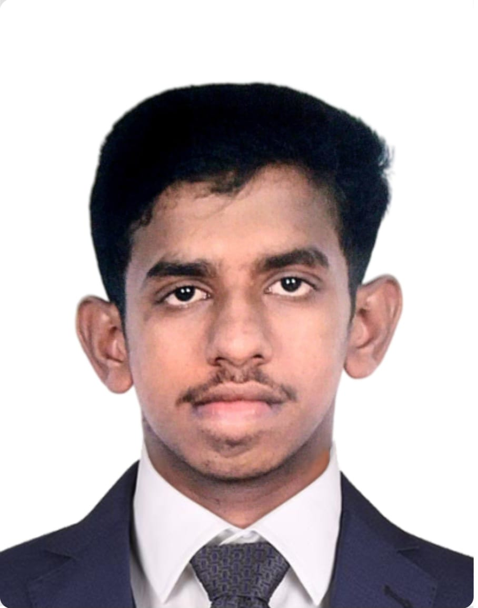

Welcome To My Biography
About Me

Hi, I'm Bilal, a passionate full stack developer with a background in Physics (Physics). I am currently studying full-stack web development at Brassy Academy and Consulting Pvt Ltd. My analytical
skills help me solve complex problems effectively and build innovative web applications. I enjoy exploring new technologies and learning continuously to stay up-to-date with the latest in the tech world.
Education
| Degree |
University |
Year |
| B.E (CSE) |
Anna University |
2021 |
| M.E (CSE) |
Anna University |
2025 |
Hobbies
"Music is the key to the soul, and coding is the key to the future."
I enjoy a variety of hobbies that help me stay inspired:
Singing: I find joy in exploring different genres and expressing myself through music.
Listening to XSR and ARR: Their work has a profound impact on my creative thinking.
Writing about music: I share my thoughts and reviews on the music I enjoy, helping others discover new tunes.
Exploring new technologies: I constantly learn about new programming tools, libraries, and frameworks to improve my development skills.
Skills
Here are some of the key skills I have gained through practice and education:
Frontend Development: HTML, CSS, JavaScript, React.js, Bootstrap
Backend Development: Node.js, Express.js
Database Management: MongoDB, MongoDB Atlas
Version Control: Git, GitHub
Tools: Visual Studio Code, Postman
Problem Solving: Strong foundation in Physics that aids in logical and efficient problem-solving.
Experience
Frontend Developer Intern
Worked on building responsive websites using React. js and Bootstrap, enhancing user experience through optimized designs.
Full-Stack Developer
Built and maintained web applications by integrating Node. js for the backend and React. js for the frontend. This included working on a ticket booking system and an e-commerce platform.
Goals
My professional and personal goals:
- Short-Term Goal: Master advanced full-stack development concepts like GraphQL and Docker.
- Long-Term Goal: Become a senior developer and build impactful, scalable applications that solve real-world problems.
- Personal Goal: Keep learning and contributing to the tech community by participating in open-source projects.
Strengths
My strengths that contribute to my success in both personal and professional environments:
Analytical Thinking
Developed through my academic studies in Physics, allowing me to approach problems with logical reasoning.
Adaptability
Quick to learn new technologies, frameworks, and methodologies.
Communication
Ability to explain complex technical concepts in simple terms for a broader audience.
Time Management
Able to effectively prioritize tasks and meet deadlines in fast-paced environments.
Persional Values
These are the core values that guide my personal and professional life:
- Integrity: I believe in being honest and transparent in all my interactions.
- Collaboration: Teamwork is essential to achieving larger goals.
- Continuous Learning: I am committed to lifelong learning and self-improvement.
- Giving Back: I actively help others through mentoring and contributing to community projects.
Feel free to reach out to me at bilalissudeen@example.com for any inquiries or collaboration opportunities.
© 2025 Bilal I. All rights reserved.